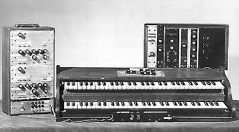

Robert A. Moog, der früher Theremine herstellte, baut den ersten Prototyp seiner "Moog"-Synthesizer, die in Kürze die gesamte Musikwelt beeinflussten. Zwischen 1963-1964 werden am MIT, Stanford Research Institute (SRI), auf der Stanford Universität in Edinburgh, Labors zur Erforschung Künstlicher Intelligenz (AI) eingerichtet.